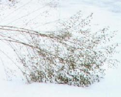
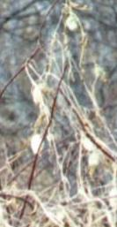
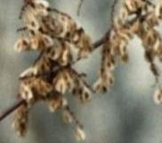

Saturday, January 03, 2004
In Which Clothes Unmake The Woman
I realized yesterday that I am having a pajama crisis.
I was undressing for bed. My husband was in the bedroom as I was doing this, which prompted me to look at myself through his eyes.
There I was in my Saddam Hussein hairdo and my spiffy Desalvo neck brace, wearing a shirt I'd inherited from my son, a black, K-mart boy's hooded sweatshirt the front of which was encrusted in several dinners, and, the coup de resistance, my pink pajama pants. Ancient elastic-waist pull-ons. Made of some vile synthetic knit. Fraying. Both stretched to bagginess AND shrunken to about six inches above my ankles. They were an Xmas present from my mother probably over a decade ago. There's a matching pajama shirt somewhere, I think. But I usually wear T shirts. Crappy ones. Last night I was also sporting two pairs of socks and my old, scuffy blue slippers. I'm sure an expanse of unshaven leg was visible between where fraying pink left off and double socks began.
I plunked down on the bed and began to whine.
DK, sweetie that he is, sat down beside me. "There, there," he said. Patted my hand. Told me I was perfectly fine. Reassured me all would be well. And that , if I wanted to, I could go on the internet (he knows how disinclined I am to shop in physical stores) and order some pajamas. "J.C. Penney," he advised, nodding sagely, pointing to his own handsome, dark blue pajamas. "That's where I got these !"
Being married is wonderful. I looked like some creature who'd just crawled out of the proverbial dark lagoon, and he was unfazed. Offered practical advice. Which I might even take.
Becoming vegan made my already excruciating fashion life even harder.
There are two things I wear that might not be strictly vegan. The first are my slippers. They're ancient, ordinary, and perfectly molded to my feet. They certainly antedate my switch -- about three years ago, or was it four ? -- from vegetarian to vegan. The other day I realized that the soles might be suede.
When I made the switch, I tossed out my leather shoes. No Imelda Marcos, I had one pair: boring but sturdy leather flats. My footwear life has been sheer hell since then, but I won't bore you with that.
I'm going to wear out the slippers.
The second is a red scarf that I started knitting and that my Lithuanian grandmother, impatient at my progress, ripped apart and re-knit when I was in the seventh grade. I suspect that it may contain wool. Nonetheless, because the scarf is a collaboration between me and my first and most brutal editor, I will continue to wear it. Hey, who knows ... maybe it's polyester !
Muffler
Mary didn’t criticize the yarn,
its unconditional red, its Z- and S- twists,
nor how it knit and purled across the line
almost iambically. And I, lest I drop
a distich or two, kept my eyes
on my laborious, fledgling tricotage,
and on the looming acrostics in the wale.
So how could I have known her hands
chafed at their own work, itching to edit mine,
until they’d swooped and snatched the raggy swatch
that I’d been sweating over for a month
and bore it off ? Within two days
the piece was complete -- still red,
but half as wide, and ten times longer,
the enjambements perfect, the rhymes true,
the narrative seamless,
the ends fringed in epiphany.
Everything is revision. Even,
after 40 years, in the broken knit
of the red scarf I still wear,
the smell of her hands.
11.19.98
I was undressing for bed. My husband was in the bedroom as I was doing this, which prompted me to look at myself through his eyes.
There I was in my Saddam Hussein hairdo and my spiffy Desalvo neck brace, wearing a shirt I'd inherited from my son, a black, K-mart boy's hooded sweatshirt the front of which was encrusted in several dinners, and, the coup de resistance, my pink pajama pants. Ancient elastic-waist pull-ons. Made of some vile synthetic knit. Fraying. Both stretched to bagginess AND shrunken to about six inches above my ankles. They were an Xmas present from my mother probably over a decade ago. There's a matching pajama shirt somewhere, I think. But I usually wear T shirts. Crappy ones. Last night I was also sporting two pairs of socks and my old, scuffy blue slippers. I'm sure an expanse of unshaven leg was visible between where fraying pink left off and double socks began.
I plunked down on the bed and began to whine.
DK, sweetie that he is, sat down beside me. "There, there," he said. Patted my hand. Told me I was perfectly fine. Reassured me all would be well. And that , if I wanted to, I could go on the internet (he knows how disinclined I am to shop in physical stores) and order some pajamas. "J.C. Penney," he advised, nodding sagely, pointing to his own handsome, dark blue pajamas. "That's where I got these !"
Being married is wonderful. I looked like some creature who'd just crawled out of the proverbial dark lagoon, and he was unfazed. Offered practical advice. Which I might even take.
Becoming vegan made my already excruciating fashion life even harder.
There are two things I wear that might not be strictly vegan. The first are my slippers. They're ancient, ordinary, and perfectly molded to my feet. They certainly antedate my switch -- about three years ago, or was it four ? -- from vegetarian to vegan. The other day I realized that the soles might be suede.
When I made the switch, I tossed out my leather shoes. No Imelda Marcos, I had one pair: boring but sturdy leather flats. My footwear life has been sheer hell since then, but I won't bore you with that.
I'm going to wear out the slippers.
The second is a red scarf that I started knitting and that my Lithuanian grandmother, impatient at my progress, ripped apart and re-knit when I was in the seventh grade. I suspect that it may contain wool. Nonetheless, because the scarf is a collaboration between me and my first and most brutal editor, I will continue to wear it. Hey, who knows ... maybe it's polyester !
Muffler
Mary didn’t criticize the yarn,
its unconditional red, its Z- and S- twists,
nor how it knit and purled across the line
almost iambically. And I, lest I drop
a distich or two, kept my eyes
on my laborious, fledgling tricotage,
and on the looming acrostics in the wale.
So how could I have known her hands
chafed at their own work, itching to edit mine,
until they’d swooped and snatched the raggy swatch
that I’d been sweating over for a month
and bore it off ? Within two days
the piece was complete -- still red,
but half as wide, and ten times longer,
the enjambements perfect, the rhymes true,
the narrative seamless,
the ends fringed in epiphany.
Everything is revision. Even,
after 40 years, in the broken knit
of the red scarf I still wear,
the smell of her hands.
11.19.98
Friday, January 02, 2004
A Good Way To Start The New Year
Killing five of these.

US Fish and Wildlife Service
"I think I shot five," Bush said. "I'm not that good a shot, but it was a lot of fun. It's a good way to start the new year"
Then he ate some beef.
US Fish and Wildlife Service
"I think I shot five," Bush said. "I'm not that good a shot, but it was a lot of fun. It's a good way to start the new year"
Then he ate some beef.
Thursday, January 01, 2004
Language Body

Asters are late blooming, and linger into autumn. Up close, they're rayed like daisies. Or, as the name suggests, stars. They are small, white or purple, profusely bunched. Then they turn to fluff: thin, dry, white. Then they are simply brown. The seeds disperse, the skeletons lean, and fall. And, next year, asters return.
I like this picture of dried asters in the snow because it reminds me of bowing. In extreme moments, we express ourselves with gestures, wordless sounds. We ululate. We tear our clothing. We strike ourselves. Confrontation with immensity engenders prostration.
Maybe it's biological, baring the throat as a sign of non-aggression, or a plea: Don't hurt me, I am vulnerable ! Our cats, when we approach, roll on their backs and present their soft undersides. Have mercy on us, oh, large and powerful ones who control the can opener of bliss and make pure the litter boxes of degradation.
Humans are not terribly merciful. We prey on weakness. We like our revenge. Wronged, we are keen to exact blood, money. We hire hit men, lawyers. We watch with horror and fascination the flushed faces of victims that fill the TV screens on the nightly news as they cry out in their pain and loss. We identify with them. We hate right along with them. We enact inflexible laws and prescribe inflexible, harsh sentences for transgressors. Politcians amass capital -- votes -- braying for the death penalty, even as they reference religious traditions that clearly say: do not kill. Forgive. Have mercy.
There is a line in Angels in America that struck me. Among so many other wildly, extravagantly wonderful lines, it is simple, almost a cliche: forgiveness may be where love and justice meet. When the terribly wronged can in fact love -- forgive -- it is breath-taking. Astonishing.
The last words of the first Christian martyr, Stephen, regarding the crowd that was stoning him to death, words that echoes Christ's words from the cross, was a prayer for their forgiveness.
Saint Paul, then Saul, "approved" of the stoning. He later had a change of heart -- a conversion -- and a whole tradition "forgives" him, venerates him, follows his dictates, despite his initial terrible trespasses against the Christ Himself.
President Bush, who makes loud political truck of his own rebirth and his life as a Christian pal of Jesus, when he was Governor of Texas, denied the Born-Again murderess Karla Tucker clemency. And, in public, mocked her plea for mercy.
Why, if "Jesus died for their sins," and prayed for his killers' "forgiveness" as he hung crucified, are Christians so slow to forgive ?
A Roman Catholic Archbishop who expressed pity and sorrow at the image of Saddam Hussein emerging from his spider hole, was vilified. It is not easy to imagine the suffering, the inner hell, of a perpetrator. To posit a kindred humanity. To imagine ourselves transgressing like that .
Sometimes we simply (though we deny it) like to hurt the weak, the small, the already suffering, the different, the Other. To console ourselves about our own weakness with an illusion of strength. A famous image of Simone Weil's is of people kicking a wounded hen.
The President is quail hunting today.
"Fearing God" always baffled me as a child. But what could be more intuitive ? It baffled me because I'd been taught the Sunday School party line: God Is Love. And probably because my own father, the dear Raul Stanati, was, when I was a child, more loving than fearsome. (Though all fathers, I think, are somewhat fearsome.) The God to-be-feared seemed a contradiction.
So, eventually, I gave up on the whole project of religion. It just didn't make sense. How could one reason about what was beyond understanding ? I would venture that there was not one sermon that I heard during my whole childhood or adolescence of churchgoing that even touched on how to approach, think about, talk about, understand, formulate questions about "God."
Perhaps if I had been taught more body language I'd have understood more. The sign of the cross, genuflecting: I envied my little Catholic friends these gestures. They brought the body into the church, into prayer, into speech-to-God.
A prostration seems to me the perfect prayer: face down before the altar, identifying features hidden, pressed against cold stone. The whole body becomes an expression of emptiness, of abjection: I am nothing. I do not know. I submit. I am broken, broken-hearted.
Asters are late blooming, and linger into autumn. Up close, they're rayed like daisies. Or, as the name suggests, stars. They are small, white or purple, profusely bunched. Then they turn to fluff: thin, dry, white. Then they are simply brown. The seeds disperse, the skeletons lean, and fall. And, next year, asters return.
I like this picture of dried asters in the snow because it reminds me of bowing. In extreme moments, we express ourselves with gestures, wordless sounds. We ululate. We tear our clothing. We strike ourselves. Confrontation with immensity engenders prostration.
Maybe it's biological, baring the throat as a sign of non-aggression, or a plea: Don't hurt me, I am vulnerable ! Our cats, when we approach, roll on their backs and present their soft undersides. Have mercy on us, oh, large and powerful ones who control the can opener of bliss and make pure the litter boxes of degradation.
Humans are not terribly merciful. We prey on weakness. We like our revenge. Wronged, we are keen to exact blood, money. We hire hit men, lawyers. We watch with horror and fascination the flushed faces of victims that fill the TV screens on the nightly news as they cry out in their pain and loss. We identify with them. We hate right along with them. We enact inflexible laws and prescribe inflexible, harsh sentences for transgressors. Politcians amass capital -- votes -- braying for the death penalty, even as they reference religious traditions that clearly say: do not kill. Forgive. Have mercy.
There is a line in Angels in America that struck me. Among so many other wildly, extravagantly wonderful lines, it is simple, almost a cliche: forgiveness may be where love and justice meet. When the terribly wronged can in fact love -- forgive -- it is breath-taking. Astonishing.
The last words of the first Christian martyr, Stephen, regarding the crowd that was stoning him to death, words that echoes Christ's words from the cross, was a prayer for their forgiveness.
Saint Paul, then Saul, "approved" of the stoning. He later had a change of heart -- a conversion -- and a whole tradition "forgives" him, venerates him, follows his dictates, despite his initial terrible trespasses against the Christ Himself.
President Bush, who makes loud political truck of his own rebirth and his life as a Christian pal of Jesus, when he was Governor of Texas, denied the Born-Again murderess Karla Tucker clemency. And, in public, mocked her plea for mercy.
Why, if "Jesus died for their sins," and prayed for his killers' "forgiveness" as he hung crucified, are Christians so slow to forgive ?
A Roman Catholic Archbishop who expressed pity and sorrow at the image of Saddam Hussein emerging from his spider hole, was vilified. It is not easy to imagine the suffering, the inner hell, of a perpetrator. To posit a kindred humanity. To imagine ourselves transgressing like that .
Sometimes we simply (though we deny it) like to hurt the weak, the small, the already suffering, the different, the Other. To console ourselves about our own weakness with an illusion of strength. A famous image of Simone Weil's is of people kicking a wounded hen.
The President is quail hunting today.
"Fearing God" always baffled me as a child. But what could be more intuitive ? It baffled me because I'd been taught the Sunday School party line: God Is Love. And probably because my own father, the dear Raul Stanati, was, when I was a child, more loving than fearsome. (Though all fathers, I think, are somewhat fearsome.) The God to-be-feared seemed a contradiction.
So, eventually, I gave up on the whole project of religion. It just didn't make sense. How could one reason about what was beyond understanding ? I would venture that there was not one sermon that I heard during my whole childhood or adolescence of churchgoing that even touched on how to approach, think about, talk about, understand, formulate questions about "God."
Perhaps if I had been taught more body language I'd have understood more. The sign of the cross, genuflecting: I envied my little Catholic friends these gestures. They brought the body into the church, into prayer, into speech-to-God.
A prostration seems to me the perfect prayer: face down before the altar, identifying features hidden, pressed against cold stone. The whole body becomes an expression of emptiness, of abjection: I am nothing. I do not know. I submit. I am broken, broken-hearted.
Wednesday, December 31, 2003
Newborn
I can remove Albert for THREE big wonderful hours today.
I had the thought today, as I took a shower, that my neck is like a newborn and I'm the clumsy, frightened new mother trying to figure out how to handle it. It's easier today that yesterday, oddly enough. My head doesn't feel quite as hellbent on pitching forward onto my desk. DON'T DROP THE BABY !
I was washing my hair, working the soap into the back of my head. What the fuck is this, I thought: this is not the occiput I've been washing for half a century, this big shelf of bone, this big meatless drop-off to the neck. Atrophy. Scary. Ugly.
It was a bad moment. I cried a little. I haven't cried much through this broken neck thing. I carried on for a minute or so right after the wreck, but I was doing more cursing than weeping; I remember a second little pity party I had at the end of the 14 hour ER stay. It was about 3 am, after all the xrays and CTs and MRIs and MRAs; DK had gone home, and I was waiting to be admitted. The ER was quiet. My curtain was shut. Lying flat on various hard surfaces in an extraction collar for all that time was taking its toll. Boo hoo. The other time was when I saw my car and realized how hard it had been hit. An ugly gash. Visible sign of force. Like my misshapen occipito-nuchal area today.
But overall, considering what bone I broke, it could have been way worse. So, all in all, I think a little gratitude's in order.
And, come to think of it, as I've been contemplating the weeds (my downscale version of considering the lilies) and contrasting the one-way trajectory of my aging with cycles of death and regrowth in nature, I'd forgotten one thing: bodies do heal. Bones knit. Muscles strengthen. So there's a little inner springtime happening even as the winter deepens, and I age.
Amen to that !
I had the thought today, as I took a shower, that my neck is like a newborn and I'm the clumsy, frightened new mother trying to figure out how to handle it. It's easier today that yesterday, oddly enough. My head doesn't feel quite as hellbent on pitching forward onto my desk. DON'T DROP THE BABY !
I was washing my hair, working the soap into the back of my head. What the fuck is this, I thought: this is not the occiput I've been washing for half a century, this big shelf of bone, this big meatless drop-off to the neck. Atrophy. Scary. Ugly.
It was a bad moment. I cried a little. I haven't cried much through this broken neck thing. I carried on for a minute or so right after the wreck, but I was doing more cursing than weeping; I remember a second little pity party I had at the end of the 14 hour ER stay. It was about 3 am, after all the xrays and CTs and MRIs and MRAs; DK had gone home, and I was waiting to be admitted. The ER was quiet. My curtain was shut. Lying flat on various hard surfaces in an extraction collar for all that time was taking its toll. Boo hoo. The other time was when I saw my car and realized how hard it had been hit. An ugly gash. Visible sign of force. Like my misshapen occipito-nuchal area today.
But overall, considering what bone I broke, it could have been way worse. So, all in all, I think a little gratitude's in order.
And, come to think of it, as I've been contemplating the weeds (my downscale version of considering the lilies) and contrasting the one-way trajectory of my aging with cycles of death and regrowth in nature, I'd forgotten one thing: bodies do heal. Bones knit. Muscles strengthen. So there's a little inner springtime happening even as the winter deepens, and I age.
Amen to that !
Tuesday, December 30, 2003
In Which I Take My First Baby Steps Into Uncharted Territory
Night is falling and the calm, mild weather of yesterday is turning. I've made coffee, put on a second pair of socks, and turned up the thermostat. The old radiator's beginning to whistle, a pleasant cozy sound.
The weather began to turn before my eyes as I sat in a plexiglass bus stop windbreak that was not living up to its name, that, in fact, was serving as a respectable wind tunnel. I hunkered down in the least turbulent spot. The wind roared, and the sky filled with bruise-colored clouds. I realized that Albert, the neck brace I'm in the process of shucking, actually does serviceable double duty as a neck warmer.
I'd just been to my first physical therapy appointment at the branch of my HMO in the next town over. It's on a major road leading from the western 'burbs into Boston, fortuantely on a direct bus route from the corner of my street. It's surrounded by malls of the most obnoxious sort and scads of car dealerships. The area takes its name and flavor from an old army munitions plant whose buildings, rehabbed, remain. With their blocks-long facade of tall windows and brick, they are far more architecturally pleasing than the malls that have sprung up around them. Despite the decorative cannons and the militaristic connotations.
I'm not a very physical person. I tend to live a few inches above and/or behind my body. Like a shadow, or a cartoon thought balloon. In school, gym was always a painful, shameful ordeal in every possible sense. One might say, delicately, that I have had "issues" in the realms of body image, eating, sexuality, that usual thorny nexus of carnality. Well, who hasn't, but let's just say you won't find me down at the local health club breaking a sweat on an "elliptical trainer" (disclaimer: I'm not even sure what that is -- it just sounds intense) or doing any "ab" related activities.
The walks I began to take by the river, last August just before my accident, were a begrudging realization that, being a 51 year old with the bone density of a 80 year old, I'd better do all I can -- including weight bearing exercise -- to try to improve matters.
So when I took "Albert" off yesterday for the first sanctioned hour and gingerly moved my neck around it was a rude shock. I do indeed have a body. With a neck. A neck that doesn't work very well right now. A neck that is not just a silent conduit between torso and head. A neck that is calling itself into question. Hello. Hell - oo !!! Here I am ! It's not just Albert that's the issue, it's -- gasp -- my body. Eek. Now what ?
Physical therapy is what. So, off I went. I got scrutinzed, palpated, draped in ice and instructed. (What the HELL are these big lumps at the base of my friggin' trapezius ?? Knots ??? Say WHAT ???)

And got three sheets of exercises: Isometrics. Posture. Range of motion. Plus a bunch more appointments.
Thus therapized, I went into the rapidly darkening day. As I shivered in the bus shelter, two elderly nuns cheerfully took their place beside me. They'd been shopping. At the mall. (Nuns ? At the MALL ? Shouldn't they be in the oratory reciting the divine office ? What world do I live in ?) They were deferential toward my neck brace; I was deferential toward their, well, nun-ness and their age, and ceded them the eye-of-the-storm spot.
Once home, since I had 30 minutes remaining of today's allotted two hours out-of-Albert, I tried out the exercises.
One might think 5 five second reps of anything would be easy.
One would be wrong.
The weather began to turn before my eyes as I sat in a plexiglass bus stop windbreak that was not living up to its name, that, in fact, was serving as a respectable wind tunnel. I hunkered down in the least turbulent spot. The wind roared, and the sky filled with bruise-colored clouds. I realized that Albert, the neck brace I'm in the process of shucking, actually does serviceable double duty as a neck warmer.
I'd just been to my first physical therapy appointment at the branch of my HMO in the next town over. It's on a major road leading from the western 'burbs into Boston, fortuantely on a direct bus route from the corner of my street. It's surrounded by malls of the most obnoxious sort and scads of car dealerships. The area takes its name and flavor from an old army munitions plant whose buildings, rehabbed, remain. With their blocks-long facade of tall windows and brick, they are far more architecturally pleasing than the malls that have sprung up around them. Despite the decorative cannons and the militaristic connotations.
I'm not a very physical person. I tend to live a few inches above and/or behind my body. Like a shadow, or a cartoon thought balloon. In school, gym was always a painful, shameful ordeal in every possible sense. One might say, delicately, that I have had "issues" in the realms of body image, eating, sexuality, that usual thorny nexus of carnality. Well, who hasn't, but let's just say you won't find me down at the local health club breaking a sweat on an "elliptical trainer" (disclaimer: I'm not even sure what that is -- it just sounds intense) or doing any "ab" related activities.
The walks I began to take by the river, last August just before my accident, were a begrudging realization that, being a 51 year old with the bone density of a 80 year old, I'd better do all I can -- including weight bearing exercise -- to try to improve matters.
So when I took "Albert" off yesterday for the first sanctioned hour and gingerly moved my neck around it was a rude shock. I do indeed have a body. With a neck. A neck that doesn't work very well right now. A neck that is not just a silent conduit between torso and head. A neck that is calling itself into question. Hello. Hell - oo !!! Here I am ! It's not just Albert that's the issue, it's -- gasp -- my body. Eek. Now what ?
Physical therapy is what. So, off I went. I got scrutinzed, palpated, draped in ice and instructed. (What the HELL are these big lumps at the base of my friggin' trapezius ?? Knots ??? Say WHAT ???)
And got three sheets of exercises: Isometrics. Posture. Range of motion. Plus a bunch more appointments.
Thus therapized, I went into the rapidly darkening day. As I shivered in the bus shelter, two elderly nuns cheerfully took their place beside me. They'd been shopping. At the mall. (Nuns ? At the MALL ? Shouldn't they be in the oratory reciting the divine office ? What world do I live in ?) They were deferential toward my neck brace; I was deferential toward their, well, nun-ness and their age, and ceded them the eye-of-the-storm spot.
Once home, since I had 30 minutes remaining of today's allotted two hours out-of-Albert, I tried out the exercises.
One might think 5 five second reps of anything would be easy.
One would be wrong.
Monday, December 29, 2003
Woodsmen

It's a beautiful, balmy day -- bright and warm enough at four o'clock to sustain faith in the eventual arrival of spring, and even feed the delusional hope that the rest of winter will be mild and snowless.
I'm just back from a riverside walk, and am listening to Ralph Vaughn Williams' "Five Variants of Dives and Lazarus." It's new to me, and lovely. Based on a folk tune. Bucolic, like my walk. There were others by the river today, more than usual, taking the sun. Walking, bicycling.
A group of boys was fishing. One of them was jabbering into a cell phone, and two of the smaller ones were swatting at willow branches with sticks. I groused, inwardly, at the electronic toy, the fish killing, the swatting. I felt vulnerable and misanthropic. I had fleeting convent fantasies.
I longed for my cerebral, androgynous fantasy botanist to emerge from the woods.
On my agenda was returning to the river hermit's midden. For two reasons.
I'd left it two days ago with the tiniest of nagging worries that there was, in fact, a dead hermit in the collapsed tent. A tiny, irrational worry. I'm a little obsessive, but not overly so. Nonetheless, when I was trying to decide on my itinerary today, I chose the river over the cemetary so I might check and resolve this little folie de doute.
Plus, I wanted to take a picture. Raptor that I have become.
Little had changed at the site, although I think one of the suitcases had been moved. I went right to the tent, and nudged the bulgy part with my toe. Trash, not corpse. Phew. I lifted the corner of one of the half-open suitcases. It was full of wadded up clothes. A tabloid newspaper was splayed between two trees. I took some pictures and left. There were some green shoots in the mud near the river bank, and one stand of vivid green grass.
On my way back, a policmen on a motorcycle slowly approach on the paved path. I asked him whether ATVs were allowed. Nope, he replied. That's why he was there. Patrolling for them. He inquired solicitously about my neck brace, then rode on. Not quite my fantasy botanist, but he'd have to do.
Yes, I have a few unresolved Daddy issues.
On my way back I stopped on the footbridge to watch the ducks . It's a beautiful little bridge, light green, and gently arched like the bridges of Japanese floating world woodcuts. Next to it, and a beautiful foil to it, is an ancient railroad trestle bridge, its dense cluster of upright poles dark, charred. The ducks were swimming in pairs among the dried river grasses -- green headed mallard boys and their duller brown consorts.
To my surprise, as I leaned on the rail watching the ducks, DK arrived on his bicycle.

He had his bright yellow bike jacket on, and I was in my usual dun, nondescript garb. We watched the duck pairs doing little head bobbing dances and rearing up out of the water. Courtship, we guessed. Duck love. I showed him the dried burcucumber pods and the Japanese knotweed and its golden seeds. I watched him ride off feeling my usual mild sadness and bemusement at mere fact of existence.
 
I suppose, earlier, when I was feeling the solitary female in an aggressive and stick-wielding male universe, I should have taken comfort in the rhizomtously proliferating knotweed --
The Japanese Knotweed Alliance explains that "Japanese Knotweed is one of the most extraordinary examples of an invasive plant known. Firstly it is a giant herb, which every Spring grows rapidly to a height of 2 or 3 metres, only to be cut down by the first winter frost and grow afresh the next Spring. It is actually a dioecious plant which means that you need male and female plants for sexual reproduction to occur, yet in Europe, so far, we only have female plants. Not only is it a single sex, it is also a single clone, as work carried out at the University of Leicester has shown. Given that it must occupy many thousands of hectares in Britain alone (the same clone is also known to occur in continental Europe and North America), in total biomass terms, it is probably the biggest female in the world!
I knew I felt a strange affinity for the plant.
You go girl !
Sunday, December 28, 2003
CCC
g a t h e r i n g water is a reflective and well-written blog by a Unitarian Universalist seminarian. His recent essay on bible stories and samaritans is wonderful, riskily self-interrogating. I recommend it.
His latest entry is about a movement that's new to me -- cultural creatives. It appears, from his essay, that UUs (and others) are eyeing these folks as a congenial demographic, well worth courting and bringing into one's flock. He casts a skeptical, critical eye on the whole enterprise of designating and recruiting this demographic, whose belief system, it turns out, consists of a goulash of new age, esalen, ecological, spiritual, eastern, earth-centered, systems-theory, bodywork, liberal, activist concepts. All very white, middle-to-upper class, and homogeneous. He does not necessarily disagree with all the values they posit (most of them are treacily self-evident), but to wonder what the purpose might be in creating this category, so much like a marketing demographic. And to wonder at the wisdom of welcoming this particular project into a specific theology.
His discussion of "cultural creatives" piqued my interest and I visited their website.
Disclaimer: I tend to be a bit cynical about things new age. The homology with the french nuage, cloud, is not without import. My ambitious administrator father, after all, the dear Raul Stanati,

morphed into a reincarnationist meditating hypnotist; my rigorously Freudian psychoanalyst became an holotropic breathworks-propounding champion of alien abductions, and my very first beau, a lapsed Catholic, atheistic Marxist, in late life began to channel the spirits of dead Native Americans. Hoo boy. You can see where I hesitate even using the word "spiritual."
The CC website is replete with such images as a woman curled up on a sofa weeping with relief that her proclivity for taking yoga classes has finally been validated. Images of cozy conversations over hot mugs of cocoa and warm cinnamon buns. (Personally, I'd prefer hot chocolate soymilk. What ? No soy ? You gaia-hypothesis-spouting hypocritical exploiters of dairy animals !) And of course there's lots and lots and lots of "sharing."
The founders propose to "hold a mirror" up to these "optimistic, altruistic" folks who don't yet know that they are "cultural creatives" so that they will recognize themselves as a group and feel empowered to "speak more frankly in public settings" in ways that will eventually lead to a more "integral culture." (And sell more books, mutters my inner cynic.) Well, what monster would ever think of arguing with the idea of an "integral culture" ?
The "Cultural Creative" movement is the brainchild (perhaps they would prefer heart child or love child) of Paul Ray and Sherry Anderson. He's a marketing analyst/consultant and she's a psychologist with some Zen background. There is quiz a on their website that let's you find out whether you too might be a member of this elite, a book you can buy to learn more about yourself and the movement, and workshops, symposia, empowerment weekends and retreats you can attend to interface and share with other like minded CCs.
I checked out the Quiz. My eyes rolled so far up into my head I nearly needed an opthomological intervention to retrieve them. There's a checklist of 18 belief statements. Agree with ten, and you're in. Is there a secret handshake ? Let's take #10.
10. ... are concerned about violence and abuse of women and children around the world.
Now who on earth isn't ? But can you imagine the frisson of narcissistic and smug self-satisfaction the potential CC feels as he or she checks this one off ?
or this one
1. ... love nature and are deeply concerned about its destruction.
or this
7. ... care intensely about both psychological and spiritual development
Not just concern and care -- DEEP concern and INTENSE care.
There's lot's more: children, communities, neighborhoods, feminism, helping people, volunteering, maintaining relationships, limiting consumption, disempowering corporations -- all good things, but, jeez, aren't they kind of self-evident ? Ideas shared and lived by many types of "religious" and "humanistic" folks, or just plain nice folks, good folks, regular folks of many diferent stripes ?
And, finally, at #18, there's a sop to diversity, albeit oddly put. Cultural creatives
18. ...like people and places that are exotic and foreign, and like experiencing and learning about other ways of life.
There's not much on their list about matters of racism, homophobia, immigrants' rights. Just this objectification of the "exotic" and "foreign" Other as an experience to be consumed.
There's a whole horrifically juicy page on lifestyles, which thrusts a blunt thumb into the squishy heart of the CC movement as if it were a Gigantic Jack Horner pie and pulls out a quivering plum of a silly and revolting stereotype. Lets take a look.
CCs prefer radio, especially NPR, and reading books over TV. OK, TV is bad. Uh huh. Well that's a no brainer.
CCs are "aggressive consumers of the arts and culture." This reminded me of a phrase I loathe: "voracious reader." Oh, the orality ! It's usually spoken in the first person -- "I am a voracious reader" -- with an air of self-display and smugness. Books (music, movies) as cultural capital. As accessories to one's ego. No different, on one level, than the ostentatious consumer luxuries the CCs scorn.
I asked myself awhile back: why did I find lawn statues of Buddha to be admirable, to the point of coveting one, and the commonplace statue of the Virgin Mary on the halfshell to be tacky ? The answer was bracingly ugly: the one seems exotic and hip, and would be a display of my own hipness. The other ? Ordinary. Which of course I am not, being a closeted Cultural Creative. Yeah, right. We settled on an ironic brace of pink flamingos. Non-denominational. (Well, there's nothing that's not a signifier of something. Deconstrct that, Harry.)
CCs, we learn, are into "stories, whole process and systems" and "symbols that go deep." As opposed to vapid algorithms and shallow symbols, I guess. Oh, yeah, they hate TV ads and kids' TV "more than most Americans." How radical.
And, of course, they "desire authenticity." As in (I'm not kidding) buying "Smith and Hawken garden tools" (whatever the hell they are...bet they cost more than my Home Depot rake, which, come to think of it, reeks of Sartrean inauthenticity) and patronizing "the natural foods industry." So it's a branding thing ? We are what we consume ? Authenticity as based on what you buy ? I'm getting the same willies here as I get in Whole Foods when I see the heaped shopping carts of the affluent and educated patrons whose SUVs clog the parking lot, and whose clever undisciplined children, shrieking at the tops of their clever little lungs, run me over with their heaping kiddo-sized carts.
Am I wrong to think that, on one level, a Little Debbie Cake as loathsome as it is, is more, well, honest than a four dollar save-the-rainforest vegan cookie ? Disclaimer: I AM vegan. And I hate how, sometimes, veganism devolves into just another subset of more refined consumerism.
Next we learn that CCs are "careful consumers." They read, of all things, that mag-for-the-masses "Consumer Reports," and are "practically the only consumers who regularly read labels." My late Uncle -- my dear linguistic and naturalist mentor, Peter -- read consumer reports religiously. His political worldview was right out of Rush Limbaugh.
I'm beginning to think we need to add another C to the acronym: CCC for Culturally Creative Consumers.
We read on, in "lifestyles" to discover that CCCs are "foodies" -- now there's an icky term -- who buy "resale" houses that they fix up, deplore "status-display" homes and "tract houses in treeless suburbs," preferring "authentic" styles (Frank Lloyd Wright, authentic adobe, authentic salt box) with access to nature, bike trails and historical preservation (so these are the guys who won't let you paint your house purple and who complain about your lawn flamingos !). Their houses are "nests" with "interesting nooks and niches" with the childrens' space "buffered" away from the adults'. (Kiddos off with the Nanny, I guess, while Mom and Dad engage in their authentic pursuits in their own private living areas.)
So now it's cutting edge to be aesthetically against "little boxes made of ticky tacky" ? I think not. They were lamenting Levittown in the fifties, for goodness sakes ! And who -- in Massachusetts at least -- can afford to buy anything other than maybe half a box made out of ticky tacky ? If that ? I am living in a house that we bought 6 years ago and that we could not afford to buy today. I'm a doctor. I'm not poor.
These CCC dwellings are full, of course, of "crafts" and "art." The decor is "eclectic." Book-filled, of course. And: "Status display happens inside the house and not outside, though it is not blatant: it is a display of personal good good taste and creative sense of style." So a little status display is OK, if it is of the right kind, and is, in fact, a simple statement of "good taste." Am I wrong to find this condescending, elitist, uncompassioante and, again, self-aggrandizing ?
CCCs drive hybrid cars. Or Volvos. Or "well-made Japanese cars." Oh, and they "loathe the process one goes through car at dealerships more than most people do." Such sensitive creatures. Verging on the neurasthenic ! I would argue that one can face even that painful "process" with a self-instructive and humanizing equanimity. I have.. And I am a quasi agoraphobic (as in its root sense -- fear of the marketplace) anti-consumer radical. It was liberating.
The next one kills me: the CCCs (see above) in their affinity for and approval of the exotic and foreign, "are on the cutting edge of vacation travel." As one might expect, they eschew mere cruises and tours for adventurous, spiritual and altruistic junkets to Indian temples, tourist-free back country (they aren't tourists, you know); they like "eco-tourism," "fantasy baseball camps," "save-the-baby-seals vacations" and "help-rebuild-a-Mayan-Village vacations." But not package tours. Never those. Or maybe just high priced, exotic, exclusive eco-altruistic package tours, no, I mean adventures. Are we getting a theme here ? A theme of lots and lots of disposable income ? Of elitism and exclusivity and self-importance ? CCCs, on the one hand, and the irredeemably and unteachably vulgar hoi polloi on the other ?
The next "lifestyle" comment takes the "cutting edge vacation" to ever more refined heights: CCCs are "experiential consumers." There's that consuming again. What hungry, hungry creatures these CCCs are. They are avid for consuming the, uh, experiences sold by the "experience industry" which is opposed to mere consumable "products." Here we've ascended into the realm of the "workshop," the "spiritual gathering, the "vacation-as-self-discovery" -- which must, of course, be "authentic" and provided by "fellow CCs."
Finally, the CC lifestyle is "holistic." Agains, CCs "consume" "personal growth psychotherapy, alternative health care and natural foods." They want to unify the "body-mind-spirit." "Unsympathetic physicians" call some of these preventive-medicine mavens "the worried well." The CC lifestyle is, again, into demonizing, dichotomizing. "Unsympathtic doctors," "tourists," "most Americans" versus the Culturally Creative Consumer.
After reflecting on all this, I can understand matthew gatheringwater's reservations. This is not the stuff of theology. This is the stuff of advertising. Branding. Marketing. It's about "good taste" and buying the right stuff and hanging out with people just like yourself that validate all your own prejudices. It's a club as smugly self-satisfied as any, probably more so. It's about narcissism and grandiosity and pleasure.
I'll take Dorothy Day, Thomas Merton and the Berrigans, all the theistic and retrograde Catholic baggage notwithstanding, over this crap any day. And it disturbs me to hear that serious, respectable religious institutions are even giving it a second glance.
His latest entry is about a movement that's new to me -- cultural creatives. It appears, from his essay, that UUs (and others) are eyeing these folks as a congenial demographic, well worth courting and bringing into one's flock. He casts a skeptical, critical eye on the whole enterprise of designating and recruiting this demographic, whose belief system, it turns out, consists of a goulash of new age, esalen, ecological, spiritual, eastern, earth-centered, systems-theory, bodywork, liberal, activist concepts. All very white, middle-to-upper class, and homogeneous. He does not necessarily disagree with all the values they posit (most of them are treacily self-evident), but to wonder what the purpose might be in creating this category, so much like a marketing demographic. And to wonder at the wisdom of welcoming this particular project into a specific theology.
His discussion of "cultural creatives" piqued my interest and I visited their website.
Disclaimer: I tend to be a bit cynical about things new age. The homology with the french nuage, cloud, is not without import. My ambitious administrator father, after all, the dear Raul Stanati,
morphed into a reincarnationist meditating hypnotist; my rigorously Freudian psychoanalyst became an holotropic breathworks-propounding champion of alien abductions, and my very first beau, a lapsed Catholic, atheistic Marxist, in late life began to channel the spirits of dead Native Americans. Hoo boy. You can see where I hesitate even using the word "spiritual."
The CC website is replete with such images as a woman curled up on a sofa weeping with relief that her proclivity for taking yoga classes has finally been validated. Images of cozy conversations over hot mugs of cocoa and warm cinnamon buns. (Personally, I'd prefer hot chocolate soymilk. What ? No soy ? You gaia-hypothesis-spouting hypocritical exploiters of dairy animals !) And of course there's lots and lots and lots of "sharing."
The founders propose to "hold a mirror" up to these "optimistic, altruistic" folks who don't yet know that they are "cultural creatives" so that they will recognize themselves as a group and feel empowered to "speak more frankly in public settings" in ways that will eventually lead to a more "integral culture." (And sell more books, mutters my inner cynic.) Well, what monster would ever think of arguing with the idea of an "integral culture" ?
The "Cultural Creative" movement is the brainchild (perhaps they would prefer heart child or love child) of Paul Ray and Sherry Anderson. He's a marketing analyst/consultant and she's a psychologist with some Zen background. There is quiz a on their website that let's you find out whether you too might be a member of this elite, a book you can buy to learn more about yourself and the movement, and workshops, symposia, empowerment weekends and retreats you can attend to interface and share with other like minded CCs.
I checked out the Quiz. My eyes rolled so far up into my head I nearly needed an opthomological intervention to retrieve them. There's a checklist of 18 belief statements. Agree with ten, and you're in. Is there a secret handshake ? Let's take #10.
10. ... are concerned about violence and abuse of women and children around the world.
Now who on earth isn't ? But can you imagine the frisson of narcissistic and smug self-satisfaction the potential CC feels as he or she checks this one off ?
or this one
1. ... love nature and are deeply concerned about its destruction.
or this
7. ... care intensely about both psychological and spiritual development
Not just concern and care -- DEEP concern and INTENSE care.
There's lot's more: children, communities, neighborhoods, feminism, helping people, volunteering, maintaining relationships, limiting consumption, disempowering corporations -- all good things, but, jeez, aren't they kind of self-evident ? Ideas shared and lived by many types of "religious" and "humanistic" folks, or just plain nice folks, good folks, regular folks of many diferent stripes ?
And, finally, at #18, there's a sop to diversity, albeit oddly put. Cultural creatives
18. ...like people and places that are exotic and foreign, and like experiencing and learning about other ways of life.
There's not much on their list about matters of racism, homophobia, immigrants' rights. Just this objectification of the "exotic" and "foreign" Other as an experience to be consumed.
There's a whole horrifically juicy page on lifestyles, which thrusts a blunt thumb into the squishy heart of the CC movement as if it were a Gigantic Jack Horner pie and pulls out a quivering plum of a silly and revolting stereotype. Lets take a look.
CCs prefer radio, especially NPR, and reading books over TV. OK, TV is bad. Uh huh. Well that's a no brainer.
CCs are "aggressive consumers of the arts and culture." This reminded me of a phrase I loathe: "voracious reader." Oh, the orality ! It's usually spoken in the first person -- "I am a voracious reader" -- with an air of self-display and smugness. Books (music, movies) as cultural capital. As accessories to one's ego. No different, on one level, than the ostentatious consumer luxuries the CCs scorn.
I asked myself awhile back: why did I find lawn statues of Buddha to be admirable, to the point of coveting one, and the commonplace statue of the Virgin Mary on the halfshell to be tacky ? The answer was bracingly ugly: the one seems exotic and hip, and would be a display of my own hipness. The other ? Ordinary. Which of course I am not, being a closeted Cultural Creative. Yeah, right. We settled on an ironic brace of pink flamingos. Non-denominational. (Well, there's nothing that's not a signifier of something. Deconstrct that, Harry.)
CCs, we learn, are into "stories, whole process and systems" and "symbols that go deep." As opposed to vapid algorithms and shallow symbols, I guess. Oh, yeah, they hate TV ads and kids' TV "more than most Americans." How radical.
And, of course, they "desire authenticity." As in (I'm not kidding) buying "Smith and Hawken garden tools" (whatever the hell they are...bet they cost more than my Home Depot rake, which, come to think of it, reeks of Sartrean inauthenticity) and patronizing "the natural foods industry." So it's a branding thing ? We are what we consume ? Authenticity as based on what you buy ? I'm getting the same willies here as I get in Whole Foods when I see the heaped shopping carts of the affluent and educated patrons whose SUVs clog the parking lot, and whose clever undisciplined children, shrieking at the tops of their clever little lungs, run me over with their heaping kiddo-sized carts.
Am I wrong to think that, on one level, a Little Debbie Cake as loathsome as it is, is more, well, honest than a four dollar save-the-rainforest vegan cookie ? Disclaimer: I AM vegan. And I hate how, sometimes, veganism devolves into just another subset of more refined consumerism.
Next we learn that CCs are "careful consumers." They read, of all things, that mag-for-the-masses "Consumer Reports," and are "practically the only consumers who regularly read labels." My late Uncle -- my dear linguistic and naturalist mentor, Peter -- read consumer reports religiously. His political worldview was right out of Rush Limbaugh.
I'm beginning to think we need to add another C to the acronym: CCC for Culturally Creative Consumers.
We read on, in "lifestyles" to discover that CCCs are "foodies" -- now there's an icky term -- who buy "resale" houses that they fix up, deplore "status-display" homes and "tract houses in treeless suburbs," preferring "authentic" styles (Frank Lloyd Wright, authentic adobe, authentic salt box) with access to nature, bike trails and historical preservation (so these are the guys who won't let you paint your house purple and who complain about your lawn flamingos !). Their houses are "nests" with "interesting nooks and niches" with the childrens' space "buffered" away from the adults'. (Kiddos off with the Nanny, I guess, while Mom and Dad engage in their authentic pursuits in their own private living areas.)
So now it's cutting edge to be aesthetically against "little boxes made of ticky tacky" ? I think not. They were lamenting Levittown in the fifties, for goodness sakes ! And who -- in Massachusetts at least -- can afford to buy anything other than maybe half a box made out of ticky tacky ? If that ? I am living in a house that we bought 6 years ago and that we could not afford to buy today. I'm a doctor. I'm not poor.
These CCC dwellings are full, of course, of "crafts" and "art." The decor is "eclectic." Book-filled, of course. And: "Status display happens inside the house and not outside, though it is not blatant: it is a display of personal good good taste and creative sense of style." So a little status display is OK, if it is of the right kind, and is, in fact, a simple statement of "good taste." Am I wrong to find this condescending, elitist, uncompassioante and, again, self-aggrandizing ?
CCCs drive hybrid cars. Or Volvos. Or "well-made Japanese cars." Oh, and they "loathe the process one goes through car at dealerships more than most people do." Such sensitive creatures. Verging on the neurasthenic ! I would argue that one can face even that painful "process" with a self-instructive and humanizing equanimity. I have.. And I am a quasi agoraphobic (as in its root sense -- fear of the marketplace) anti-consumer radical. It was liberating.
The next one kills me: the CCCs (see above) in their affinity for and approval of the exotic and foreign, "are on the cutting edge of vacation travel." As one might expect, they eschew mere cruises and tours for adventurous, spiritual and altruistic junkets to Indian temples, tourist-free back country (they aren't tourists, you know); they like "eco-tourism," "fantasy baseball camps," "save-the-baby-seals vacations" and "help-rebuild-a-Mayan-Village vacations." But not package tours. Never those. Or maybe just high priced, exotic, exclusive eco-altruistic package tours, no, I mean adventures. Are we getting a theme here ? A theme of lots and lots of disposable income ? Of elitism and exclusivity and self-importance ? CCCs, on the one hand, and the irredeemably and unteachably vulgar hoi polloi on the other ?
The next "lifestyle" comment takes the "cutting edge vacation" to ever more refined heights: CCCs are "experiential consumers." There's that consuming again. What hungry, hungry creatures these CCCs are. They are avid for consuming the, uh, experiences sold by the "experience industry" which is opposed to mere consumable "products." Here we've ascended into the realm of the "workshop," the "spiritual gathering, the "vacation-as-self-discovery" -- which must, of course, be "authentic" and provided by "fellow CCs."
Finally, the CC lifestyle is "holistic." Agains, CCs "consume" "personal growth psychotherapy, alternative health care and natural foods." They want to unify the "body-mind-spirit." "Unsympathetic physicians" call some of these preventive-medicine mavens "the worried well." The CC lifestyle is, again, into demonizing, dichotomizing. "Unsympathtic doctors," "tourists," "most Americans" versus the Culturally Creative Consumer.
After reflecting on all this, I can understand matthew gatheringwater's reservations. This is not the stuff of theology. This is the stuff of advertising. Branding. Marketing. It's about "good taste" and buying the right stuff and hanging out with people just like yourself that validate all your own prejudices. It's a club as smugly self-satisfied as any, probably more so. It's about narcissism and grandiosity and pleasure.
I'll take Dorothy Day, Thomas Merton and the Berrigans, all the theistic and retrograde Catholic baggage notwithstanding, over this crap any day. And it disturbs me to hear that serious, respectable religious institutions are even giving it a second glance.